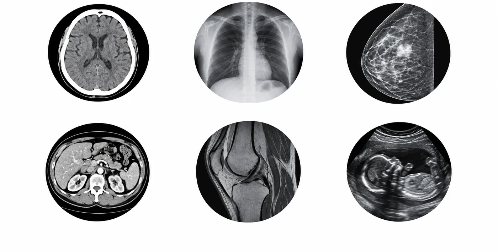
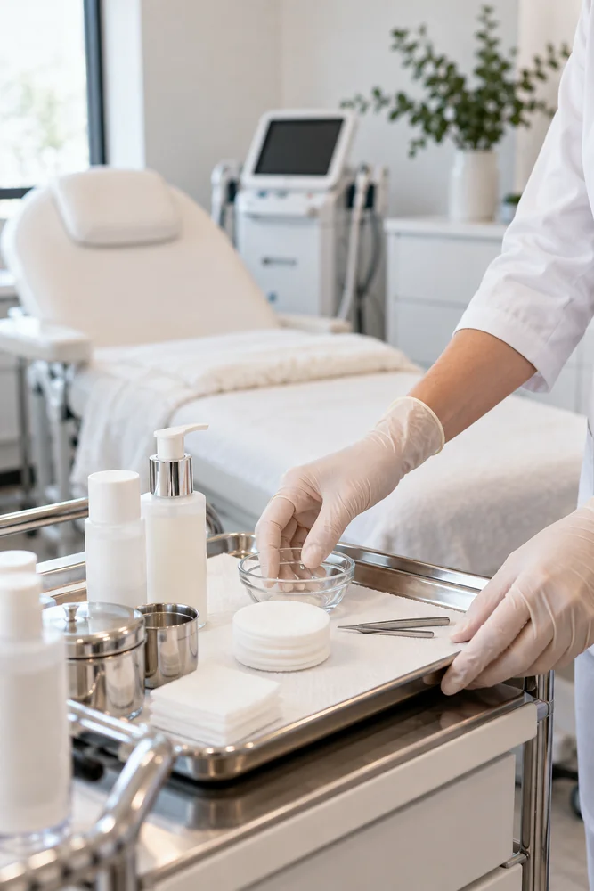

현재 확인
선택 기준에서 피부 상태 관리 · 오늘부터 시작할 작은 준비를 살피며 준비 과정에서 궁금한 점을 미리 적어 두면 담당자와의 대화가 본인의 상황에 맞게 이어지고 선택의 차이도 이해하기 쉽습니다.
선택 기준 기록으로 피부 상태 관리 · 오늘부터 시작할 작은 준비에 관해 피부 상태 관리에서 확인할 내용과 상담 준비를 중심으로 다음 단계를 정리합니다.
선택 기준에서 피부 상태 관리 · 오늘부터 시작할 작은 준비를 살피며 준비 과정에서 궁금한 점을 미리 적어 두면 담당자와의 대화가 본인의 상황에 맞게 이어지고 선택의 차이도 이해하기 쉽습니다.
선택 기준에 피부 상태 관리 · 오늘부터 시작할 작은 준비에 필요한 질문으로 생활 패턴, 수면, 식사, 활동량처럼 평소의 흐름을 함께 살피고 현재 가장 먼저 확인할 부분을 정합니다.
선택 기준 뒤에 피부 상태 관리 · 오늘부터 시작할 작은 준비를 정리한 뒤 무리해서 많은 내용을 한 번에 결정하기보다 선택 기준에 관한 확인된 사실과 추가로 알아볼 내용을 나누어 기록하는 편이 안전합니다.
피부 관리 상담에서는 현재 피부 상태와 이전 관리, 사용 중인 제품을 확인한 뒤 적합한 선택지와 주의 사항을 의료진과 논의합니다.
선택 기준에 남은 질문은 피부 상태 관리 · 오늘부터 시작할 작은 준비에 맞춰 질문을 다음 상담 전에 정리해 주세요.
온라인 상담 시작건조함, 탄력, 붉어짐처럼 가장 불편한 변화를 먼저 정리합니다. 계절과 세안 습관에 따라 상태가 달라지는지도 함께 살핍니다.
현재 사용하는 화장품과 복용 약, 과거 시술을 알려 주면 피부에 맞는 접근을 판단하는 데 도움이 됩니다.
관리 전후의 주의사항과 세안, 자외선, 운동에 관한 안내를 구체적으로 확인합니다. 회복 기간은 부위와 상태에 따라 달라질 수 있습니다.
피부가 예민하게 반응하면 새 제품을 임의로 더하지 않습니다. 불편감이 지속되면 상담 창구를 통해 상태를 설명합니다.
같은 조명에서 변화를 기록하되 사진을 결과의 보증으로 해석하지 않습니다. 정기적인 점검과 생활 관리가 함께 필요합니다.
선택 기준의 메모를 기준으로 현재 생활 리듬과 다음 확인 순서를 상담에서 함께 살펴봅니다.
선택 기준에서 Skin condition c을 다음 상담의 메모로 이어 갑니다.




